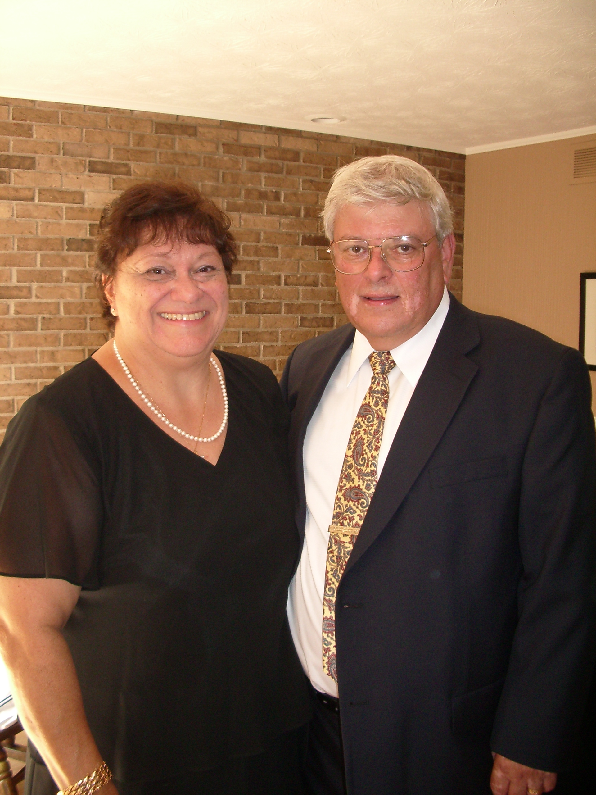

Name: Robert Isernia
Zeta Number: ThU426
Grad Year: 1963
Degree/Department: Aerospace Engr
e-mail: risernia@netacc.net
Faye and I moved to Chambersburg Pa. to be closer to our children and grand children. Since the last reunion we had three new grand children, two girls and a boy, making a total of seven.
Faye and I are living in a two bedroom duplex that is very comfortable for us, not too much room but spacious enough for company and family dinners. The climate is much better than upstate New York.
Faye and I went to Sicily in May. We had a wonderful time visiting Greek temples, Roman villas, antiquities and churches. We went to Mt Etna and picked up some lava rocks for two of our grandsons who promptly said, "ROCKS! YUCK ".
Faye and I are still enjoying our retirement
Wish I could play golf. Since moving I have not hooked up with a foursome for regular golf. Spent the last two years getting a lawn and shrubs established. The yard is a never ending project. 